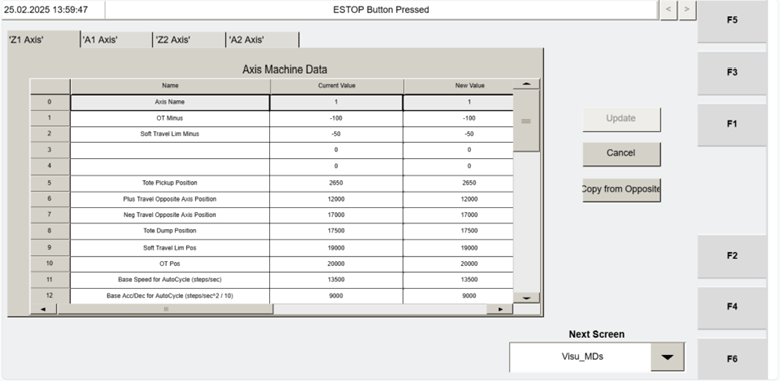

| Procedure ID | proc_verify_visu_mds_machine_data_axis_match_v1 |
|---|---|
| Title | Verify VISU_MDS (Machine Data) axis parameters match between machines (Z1/A1/Z2/A2) |
| Procedure Type | diagnostic |
| Primary Role | operator |
| Support Safe | Yes |
| Capability Tags | device_roster_state |
| Access Surface | tipper_hmi |
| Audience Roles | operator |
| Failure Pattern Tags | None |
| Validation Status | needs_sme_review |
| Merge Status | source_finalized |
Use the Operator Station HMI VISU_MDS “Machine Data” screen to verify that key axis parameters match between machines for axes Z1, A1, Z2, and A2. Treat MD5 (Tote Pickup Position) and MD21 (Home Offset) as documented exceptions that are expected to be unique per machine and per axis.
When you need to confirm whether VISU_MDS “Machine Data” axis parameters are consistent between machines for the same axis (Z1/A1/Z2/A2), using the documented matching rules and exceptions.

Responsible role: operator
Instruction:
On the Operator Station HMI, navigate to the “Visu_MDs” screen (F2) to display the VISU_MDS “Machine Data” screen.
Expected result:
The VISU_MDS “Machine Data” screen is displayed with axis parameters available for axes Z1, A1, Z2, and A2.
Responsible role: operator
Instruction:
For the selected axis (Z1, A1, Z2, or A2), locate the Machine Data IDs and values shown on the VISU_MDS “Machine Data” screen, including: ID 0 Axis Name, ID 1 OT Minus, ID 5 Tote Pickup Position, ID 6 Plus Travel Opposite Axis Position, ID 7 Neg Travel Opposite Axis Position, ID 8 Tote Dump Position, ID 9 Soft Travel Lim Pos, ID 10 OT Pos, ID 11 Base Speed for AutoCycle (steps/min), ID 12 Base Acc/Dec for AutoCycle (steps/min^2)/10, ID 13 Jog Speed, ID 14 Jog Acceleration, and ID 20 Home Position / ID 21 Home Offset / ID 22 Homing Speed / ID 23 Homing CAM Speed / ID 24 Homing Acceleration.
Expected result:
The selected axis shows the Machine Data values for the listed IDs (0, 1, 5, 6, 7, 8, 9, 10, 11, 12, 13, 14, 20, 21, 22, 23, 24) on the VISU_MDS screen.
Responsible role: operator
Instruction:
Compare the Machine Data values between machines for the selected axis. The following data values should match between machines: ID 0 Axis Name, ID 1 OT Minus, ID 5 Tote Pickup Position, ID 6 Plus Travel Opposite Axis Position, ID 7 Neg Travel Opposite Axis Position, ID 8 Tote Dump Position, ID 9 Soft Travel Lim Pos, ID 10 OT Pos, ID 11 Base Speed for AutoCycle (steps/min), ID 12 Base Acc/Dec for AutoCycle (steps/min^2)/10, ID 13 Jog Speed, and ID 14 Jog Acceleration, plus ID 20 Home Position, ID 21 Home Offset, ID 22 Homing Speed, ID 23 Homing CAM Speed, and ID 24 Homing Acceleration.
Expected result:
For the selected axis, you can identify which Machine Data IDs match and which IDs differ between the two machines being compared.
Stop or Escalate If:
Responsible role: operator
Instruction:
When comparing machine-to-machine values for the selected axis, apply these exceptions: (1) MD5 Tote Pickup Position is expected to be unique for every machine and every axis, and (2) MD21 Home Offset is expected to be unique for every machine and every axis.
Expected result:
Any differences observed in MD5 (Tote Pickup Position) and MD21 (Home Offset) are treated as expected and not counted as faults.
Stop or Escalate If:
Responsible role: operator
Instruction:
Repeat the axis selection, ID/value location, machine-to-machine comparison, and exception handling for each axis: Z1, A1, Z2, and A2.
Expected result:
You have a pass/fail determination for each axis based on whether any non-exception Machine Data ID differs between machines.
Stop or Escalate If: